Image 1 of 1: ‘A machine learning workflow: collect and clean data, feature engineering, choose a model, train on GPU, evaluate, and then iterate back to feature engineering, where most of the work happens. A note observes that only the training box needs a GPU and the rest runs on the amd partition, usually taking longer.’
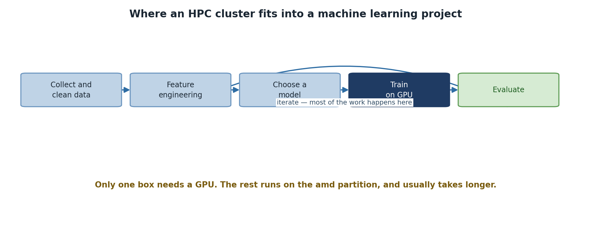
Only one stage of the workflow actually needs a
GPU.
Image 1 of 1: ‘Four cases by data size. Under 1 GB and under an hour of training: your laptop is fine. One to ten gigabytes taking hours: the laptop will struggle, so use Sagehen HPC. Ten to a hundred gigabytes taking most of a day: use a GPU on the gpu partition. Over a hundred gigabytes taking days: multiple GPUs and checkpointing.’
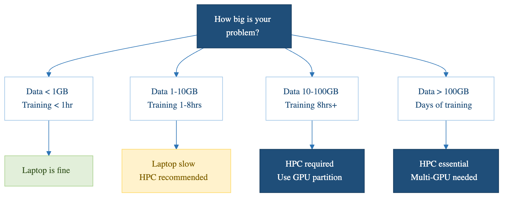
Size the problem before assuming you need the
cluster.
Image 1 of 1: ‘Five phases and where each belongs: prototype on your laptop, preprocess on the amd partition, train on the gpu partition, evaluate on the amd partition, then publish results. A note warns that preprocessing on a GPU node wastes the card while it sits idle waiting for input and output.’
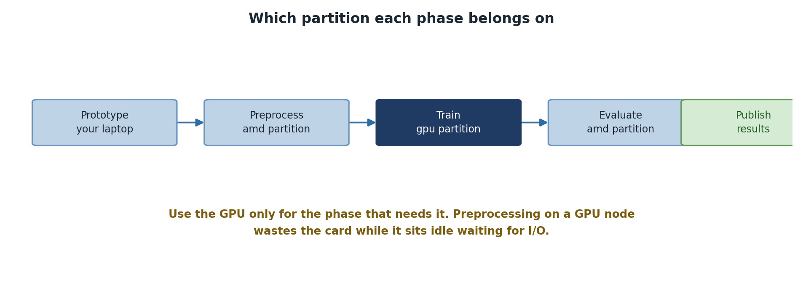
Each phase belongs on a different
partition.
Figure 2
Image 1 of 1: ‘Terminal on Sagehen HPC inside the ml_env conda environment. A heredoc runs a Python script that imports torch and prints the PyTorch version, whether CUDA is available, the CUDA version, and the number of GPUs, then loops over each GPU printing its name and total memory in gigabytes.’
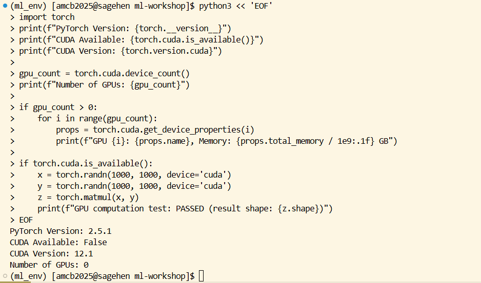
Running the verification script inside the
ml_env environment.
Figure 3
Image 1 of 1: ‘Terminal output of du -sh over the conda envs directory, sorted by size: a 28 megabyte myproject environment, a 62 megabyte tb_test environment, and a 7.0 gigabyte ml_env environment. Below, conda config --add envs_dirs adds a /bigdata path, and conda config --show envs_dirs lists the new /bigdata location ahead of the default /rhome and system miniconda3 directories.’
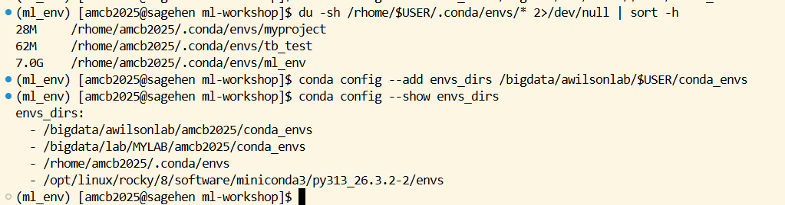
Checking environment sizes, then redirecting
conda to /bigdata.
Figure 4
Image 1 of 1: ‘Terminal running the challenge solution as a Python heredoc. It prints the PyTorch version 2.5.1, the GPU count, the GPU name and memory, then performs a matrix multiplication on the CUDA device and reports that the GPU test passed with the resulting tensor shape.’
Image 1 of 1: ‘Terminal with the ml_env conda environment active. The command which python3 returns a path inside the environment, ending in .conda/envs/ml_env/bin/python3, and which pip returns the matching pip inside the same environment directory rather than a system path.’
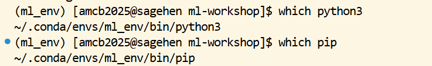
What a correctly activated environment looks
like.
Figure 2
Image 1 of 1: ‘Terminal running srun with the gpu partition and one GPU requested. The shell prompt changes from the login node to a gpu node, and nvidia-smi then prints its table showing a single NVIDIA L40S card with roughly 46 gigabytes of memory, almost none in use, and no processes running on it.’
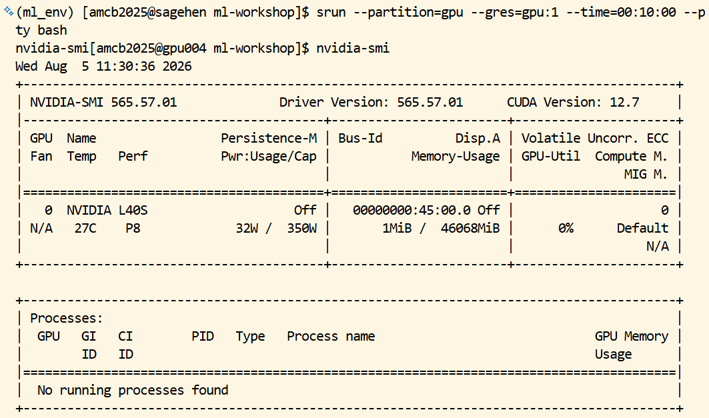
Claiming a GPU node, then confirming the card
with nvidia-smi.
Image 1 of 1: ‘Terminal running a Python heredoc that builds a small pandas DataFrame with sensor_id and temperature columns containing deliberate None values, writes it to CSV, reads it back with explicit Int32 and float32 dtypes, then prints the DataFrame shape, its memory usage in megabytes, and a count of one missing value in each of the two columns.’
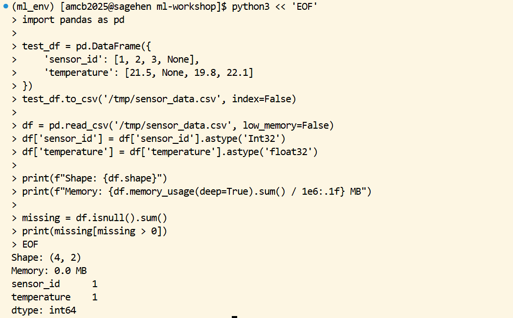
Setting dtypes on load and counting missing
values, on a small worked example.
Image 1 of 1: ‘Data-parallel training. One batch of training data is divided between three GPUs, each holding a full copy of the model and its own slice of the batch. Their gradients are then averaged across every GPU in an all-reduce step. A note warns that four GPUs rarely means four times faster because the all-reduce step is the cost, and to expect around three times.’
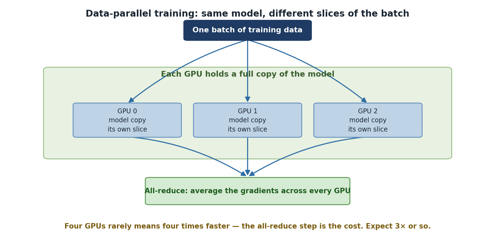
Every GPU holds the whole model; only the data
is split.
Image 1 of 1: ‘Five responses to a CUDA out of memory error, in order. First halve the batch size, the first thing to try and usually enough. Second use gradient accumulation for the same effective batch with less memory at once. Third use mixed precision in bfloat16 for roughly half the memory at little accuracy cost. Fourth use gradient checkpointing, trading compute for memory. Fifth ask for a bigger card, an A100 80 GB or RTX PRO 6000 96 GB.’
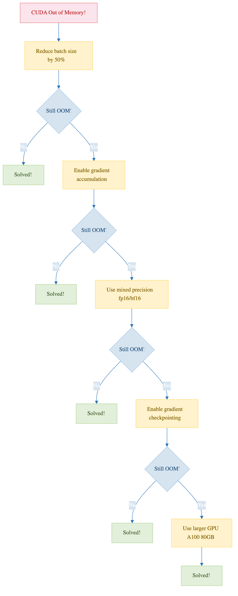
Work down the list; each step buys memory at a
different cost.
Image 1 of 1: ‘A training loop. Start training, train one epoch, and ask whether this is the best score so far. If it is, save a checkpoint to /bigdata rather than /scratch. Then ask whether there are more epochs; if so, loop back to train another, and if not, load the best checkpoint and evaluate.’
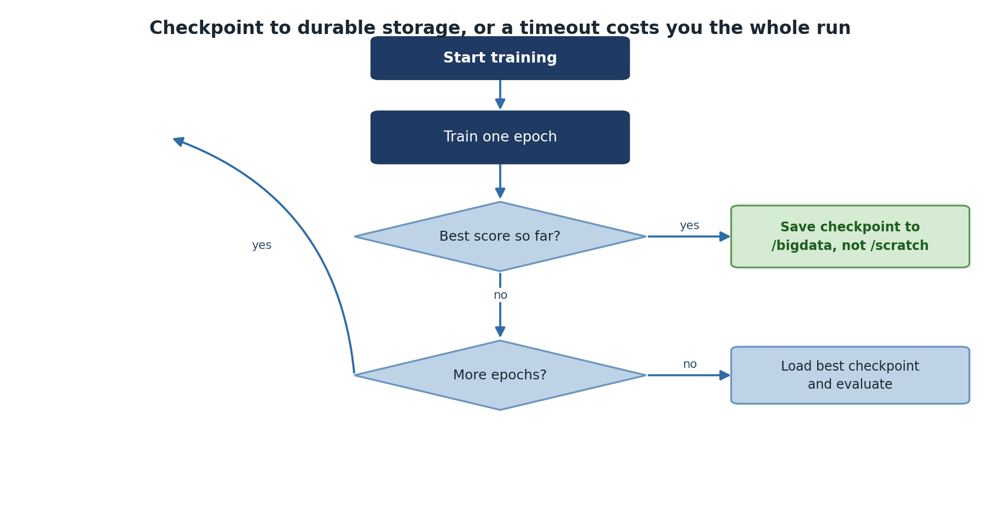
Save to /bigdata — /scratch disappears with the
job.
Image 1 of 1: ‘Terminal showing sbatch submitting train_job.sh as batch job 38943, followed by squeue long-format output. The pytorch job runs on the gpu partition in RUNNING state, a few seconds into its limit, on one node named gpu001.’
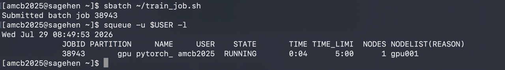
Submitting the training job and confirming with
squeue -l that it’s RUNNING on a GPU node.